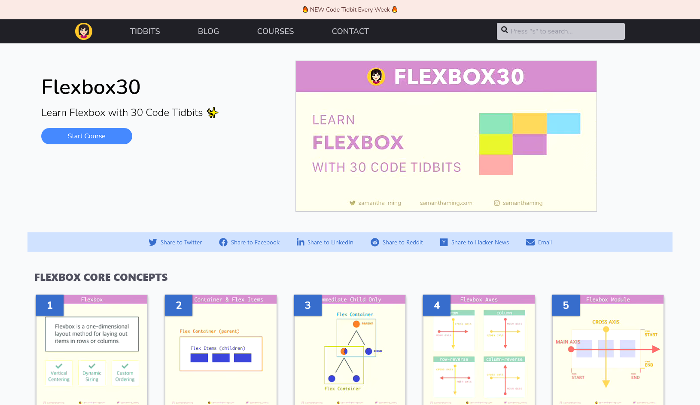
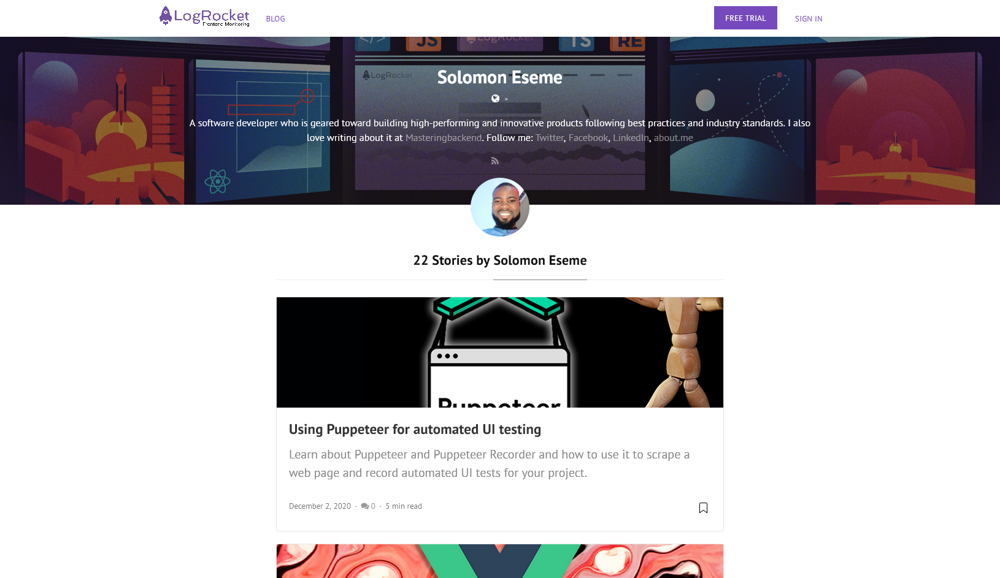
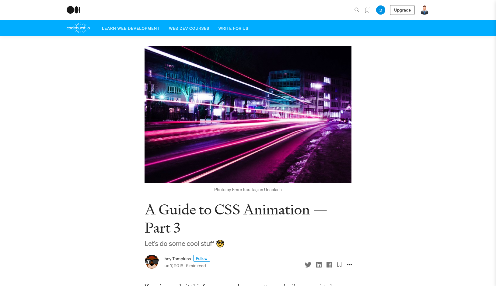
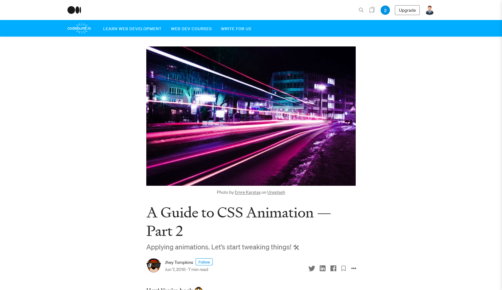
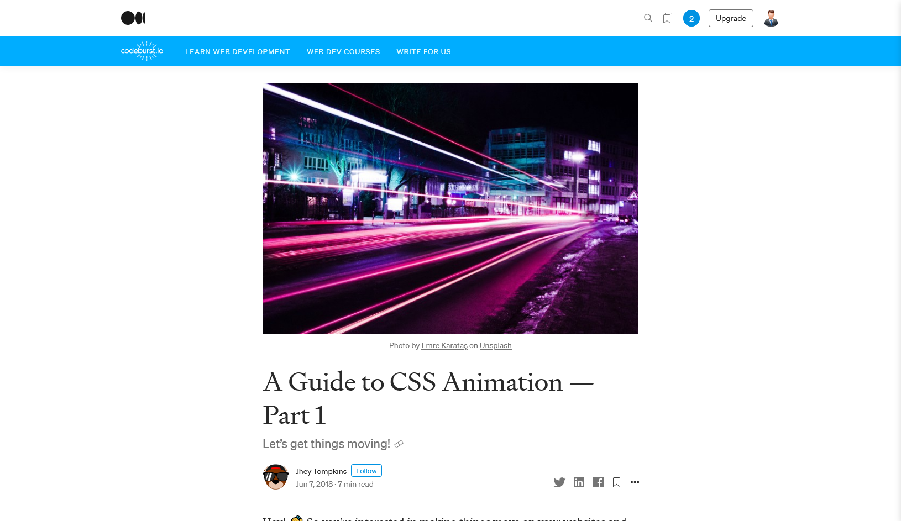
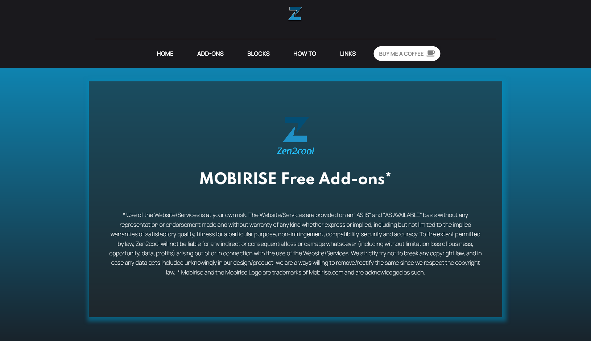
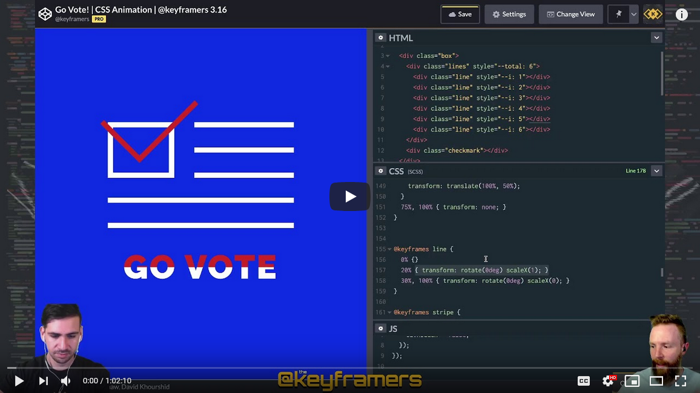

Posted by Igor Kapustin at Jan 03, 2021
Flexbox30 | SamanthaMing.com
Learn Flexbox with 30 code tidbits. Become a flexbox ninja with this FREE course!
Posted by Igor Kapustin at Jan 03, 2021
Solomon Eseme, Author at LogRocket Blog
A software developer who is geared toward building high-performing and innovative products following best practices and industry standards. I also love writing about it at Masteringbackend.
Follow me: Twitter, Facebook, LinkedIn, about.me
Posted by Igor Kapustin at Jan 03, 2021

CSS Reference Guide: padding - LogRocket Blog
The CSS padding shorthand property is used to create space within an element. It defines the content portion of the box model.
Posted by Igor Kapustin at Jan 03, 2021

Top 5 templates to kick-start your new website
In today's world almost every respected business, freelancer, etc. has a website, a place in the vast World-Wide Web.
As a full-stack web developer, my job (among multiple others) is to design modern, beautiful, and delightful websites that please not only the client but the end-user as well. Cohesive design system, though-out user experience, and accessibility - these are only a few things that I have to keep in mind while designing a website.
So you can see that there's a lot going on in the whole process. However, no matter how much you want the website you create to be good, there're always some obstacles. Web platform limitations, complex, troublesome designs, and especially time constrains are issues that you'll almost certainly stumble upon during different stages of development. In such cases you might be forced to compromise on your website's features or design, but what if I told you that there's another way?
For a long time now, templates have been the driving force for many new websites. They're among some of the best examples of the DRY (Don't Repeat Yourself) rule, and allow you to keep your website's features and design up-to-pair with the top players while maintaining your time schedule.
For this article, I've partnered with Creative Tim to showcase some of their template offerings, as well as some other interesting products. Hope you'll find it useful!
Posted by Igor Kapustin at Jan 03, 2021

CSS Reference Guide: text-decoration - LogRocket Blog
The CSS text-decoration shorthand property allows you to add and style decorative lines on text.
Posted by Igor Kapustin at Jan 03, 2021

CSS Reference Guide: position - LogRocket Blog
The CSS position property is used to manipulate or adjust the position of an element in the document. It is also useful in specifying the type of position to be used for an element.
Posted by Igor Kapustin at Jan 03, 2021

CSS Reference Guide: outline - LogRocket Blog
The CSS outline shorthand property is used to draw a line around the outside of an element. It is especially useful in conjunction with the a:focus selector to add more emphasis on links or other elements.
Posted by Igor Kapustin at Jan 03, 2021

CSS Reference Guide: margin - LogRocket Blog
The CSS margin shorthand property is used to create space around an element outside of any defined borders. It defines the outermost portion of the box model.
Posted by Igor Kapustin at Jan 03, 2021

CSS Reference Guide: color - LogRocket Blog
The CSS color property sets the foreground color of a text element or text decorations.
Posted by Igor Kapustin at Jan 03, 2021

CSS Reference Guide: vertical-align - LogRocket Blog
The CSS vertical-align property sets vertical alignment on inline elements or elements displayed as an inline-block. The vertical-align property also works on table-cell elements.
Posted by Igor Kapustin at Jan 03, 2021
Flipping card on hover CSS. CSS perspective and backface-visibility | by Akash Thakur | Dev Genius | Medium
In this article, I am going to show you how to flip a card and give it a 3Dish look while rotating. Some CSS terminologies that will come in handy here are perspective and backface-visibiity which I will explain along in the article. So let’s begin.
Posted by Igor Kapustin at Jan 03, 2021

5 CSS Properties That You Probably Don't Know - Telerik Blogs
Every year new CSS properties are standardized and made available in major browsers for you to use. They are meant to make the life of web developers like you easier, and to allow the creation of new and beautiful designs.
In this article, I'll cover 5 CSS properties that are relatively new, that you've probably never heard of before and that I find very interesting. The aim of this article is to give you an overview of what they are, which values you can use, their use cases, and also some examples.
In particular, we'll cover CSS properties related to:
writing display (font-display and writing-mode);
rendering performance improvements (contain and will-change properties);
creation of new, fancy designs (clip-path)
Before starting, I want to remind you that, when dealing with new CSS properties, it is always a good idea to check their support and potential cross-browser issues. In that regard, Can I use is the holy grail
Posted by Igor Kapustin at Jan 03, 2021

Complete Guide To CSS Scroll Snap For Awesome UX
Have you ever noticed that, while scrolling on some website on your mobile devices, scrolling ends up abruptly on some, and on other websites it’s perfect? Isn’t it annoying when you scroll down on a page, and it finishes in the middle of a paragraph or image? This is due to the fact that scrolling lacks precision on its own. For a long period of time, developers relied on JavaScript to get better control. Lately, CSS scroll snap has been widely used by developers for a well-controlled scrolling experience.
In this article on CSS scroll snap, I’ll discuss how this property can enhance the user experience & how you can implement it.
Posted by Igor Kapustin at Jan 03, 2021

#100DaysofCode Chapter 3 ~ CSS Grid - DEV Community
Introduction
Grid is a framework of spaced bars that are parallel to or cross each other or a network of lines that cross each other to form a series of squares or rectangles.
What is CSS Grid?
CSS Grid layout or CSS grid is a technique in CSS that allows web developers to create complex responsive web design layouts more easily and consistently across browsers. CSS Grid Layout Module offers a grid-based layout system, with rows and columns, making it easier to design web pages without having to use floats and positioning.
CSS Grid Layout is the most powerful layout system available in CSS. It is a two-dimensional system, meaning it can handle both columns and rows, unlike CSS Flexbox which is largely a one-dimensional system. CSS Grid Layout excels at dividing a page into major regions or defining the relationship in terms of size, position, and layer, between parts of a control built from HTML primitives. Like tables, grid layout enables an author to align elements into columns and rows. However, many more layouts are either possible or easier with CSS grid than they were with tables.
Posted by Igor Kapustin at Jan 03, 2021

Responsive Grid Design: Ultimate Guide | by Nitish Khagwal | Muzli - Design Inspiration
I find working with the grid helpful. The grid helps to maintain consistency across the different layouts and make faster design decisions. Grids give more precise control over alignments and layout on different screen sizes.
This article highlights the most important aspect of the responsive grid and how product designers can adapt grids in their design workflow.
Posted by Igor Kapustin at Jan 03, 2021

CSS Reference Guide: background - LogRocket Blog
The CSS background shorthand property sets the background effects of an element. This controls what paints underneath the content of an element.
Posted by Igor Kapustin at Jan 03, 2021

13 Dreadful Website Redesign Mistakes To Avoid In 2021
A website is the face of your business. Whether it is a big billion-dollar firm like Amazon or a freelancer showing his portfolio, a website is an indispensable part of your company that helps increase potential clients’ interest regarding your business. Over time, like any other technology variant, web technology also keeps on changing and upgrading itself every couple of years. Whatever we may be using today might not be so popular or relevant four years from now.
Therefore, it becomes necessary to analyze your website from time to time to determine what is working and what’s not. And after that, you can decide if your website needs a redesign. However, redesigning a website could be a tricky process, and you must consider many things to avoid any repercussions. With that in mind, given below are 13 website redesign mistakes you should avoid at all cost.
Posted by Igor Kapustin at Jan 03, 2021

The CSS Custom Property Toggle Trick | CSS-Tricks
Back in July 2020, I got an email from James0x57 (I always try to refer to people by their name, but I think I get the sense they prefer to go by screen name) that says:
The entire world of branching conditional logic and bulk feature toggling for custom CSS properties is possible and only exists because of a tiny footnote in the CSS spec that has gone unnoticed.
That line is:
Note: While
In other words, --foo: ; is valid.
Posted by Igor Kapustin at Jan 03, 2021

Flexbox: when negative margins save the day - DEV Community
Gap management with flexbox is not as easy as it seems. Here is a simple trick I've been using a lot lately.
Posted by Igor Kapustin at Jan 03, 2021
A Guide to CSS Animation Part 3 | by Jhey Tompkins | codeburst
If you’ve made it this far, you now know pretty much all you need to know about CSS animations. Pat yourself on the back 🙌
This final part won’t be long but I didn’t want to cram it in with the other stuff. In this part we take a look at a couple of bonus topics 👍 It’s a bit of a mix but some things to consider and be knowledgeable of.
As with Part 1 and Part 2, all code is available in the following collection. This gives you a way to play around with the code 🎾
Posted by Igor Kapustin at Jan 03, 2021
A Guide to CSS Animation Part 2 | by Jhey Tompkins | codeburst
Hey! You’re back 🙌
In Part 1, we got things moving. Now we will dig into applying animations. We already introduced animation-name and animation-duration, but there’s much more to look at.
Don’t forget, all the code is available in the following CodePen collection 👍 That way you can edit and play around with the examples.
Posted by Igor Kapustin at Jan 03, 2021

Animated Hamburger Side Menu ???? - DEV Community
Sorry, this blog post is not about making the perfect burger, I know disappointing right?
Instead, we will be looking into a CSS Animated Side Menu.
I've created this menu for my current company and wanted to guide you through some of the processes, this is a simplified version. You will learn how to animate the hamburger icon and how to slide in the menu from the right side.
We will also implement two views, one for desktop and one for mobile views.
Posted by Igor Kapustin at Jan 03, 2021

CSS Pseudo-elements - DEV Community
Yesterday we briefly touched on pseudo-elements when creating our custom checkbox
But let's dive deeper into these awesome features of CSS.
Pseudo-elements allow you to create/manipulate an original element. Without affecting that one.
They can be used to style a specific part of an element, like the first letter or add content before or after!
Posted by Igor Kapustin at Jan 03, 2021
A Guide to CSS Animation Part 1 | by Jhey Tompkins | codeburst
Hey! 👋 So you’re interested in making things move on your websites and in your apps? This guide should help you out 👍
This post assumes you’ve never created a CSS animation before. But even if you have, there may be things you were not aware of. It does assume you have some familiarity with HTML and CSS. We’ll explore creating your first animation through to things like chaining animations.
Posted by Igor Kapustin at Jan 03, 2021
Mobirise Free Add-ons
* Use of the Website/Services is at your own risk. The Website/Services are provided on an "AS IS" and "AS AVAILABLE" basis without any representation or endorsement made and without warranty of any kind whether express or implied, including but not limited to the implied warranties of satisfactory quality, fitness for a particular purpose, non-infringement, compatibility, security and accuracy. To the extent permitted by law, Zen2cool will not be liable for any indirect or consequential loss or damage whatsoever (including without limitation loss of business, opportunity, data, profits) arising out of or in connection with the use of the Website/Services. We strictly try not to break any copyright law, and in case any data gets included unknowingly in our design/product, we are always willing to remove/rectify the same since we respect the copyright law. * Mobirise and the Mobirise Logo are trademarks of Mobirise.com and are acknowledged as such.
Posted by Igor Kapustin at Jan 03, 2021

GUIDE: How to upload manually to Github (takes 2 minutes) - Mobirise Forums
Can't publish to Github? Here is a workaround. The following details how to upload manually to Github. Once you are familiar with the steps it takes roughly 2 minutes to do.
1. Create the repository on your github that you will use to host the site. (if it doesn't already exist)
2. Tell mobirise to Publish to a Local Drive Folder, instead of Github. Make sure this is a new empty folder where you will remember its location.
3. Open the intended Github repository in your browser
4. Open the folder on your computer where the site was published
5. Back at the Github repository, select Add File > Upload Files
Posted by Igor Kapustin at Jan 03, 2021

10 Ways to Create Delightful and User-Friendly Web Animation
Web animation is a great tool for improving the user experience. You can use motion to explain difficult concepts and make them easier to understand. Animations also enable us to add UI interactions to a site or app, which significantly increases engagement and ensures customers not only stick around for longer, but are also more likely to return to our clients’ websites. Web animation is therefore playing an increasingly important role in modern web and app development. However, delivering work that is not only pleasing to the eye and functional, but also informative, representative, and clear is a challenge that can be tricky to get right.
For this article, we invited six web animation experts to share their top tips on adding motion to user interfaces. We’ll cover UX principles and best practices, CSS animation techniques, advice on creating more inclusive web animations, and more. As you can’t really talk about web animation without showing any examples, we’ve also included plenty of demos to help inspire you.
Posted by Igor Kapustin at Jan 03, 2021
YouTube
David Khourshid & Stephen Shaw live code a CSS animation to encourage all you US folks out there to VOTE!
💡 Inspiration: https://dribbble.com/shots/5507059-Vo...
🎥 Video: https://youtu.be/EfQg3listr4
💻 Code: https://cdpn.io/pen/yLJEBeP
Like what we're doing? There are many ways you can support @keyframers so we can keep live coding awesome animations!
* Like & subscribe on YouTube at https://youtube.com/keyframers
* Buy web dev shirts, stickers & more at https://keyframe.rs/merch
* Follow & tweet us at https://twitter.com/keyframers
* Support us on Patreon at https://patreon.com/keyframers
Posted by Igor Kapustin at Jan 03, 2021

Illustration Gallery by ManyPixels | Open-Source Editable Illustrations
Each week, discover royalty-free illustrations to power up your projects. Use them in a commercial or non-commercial way.